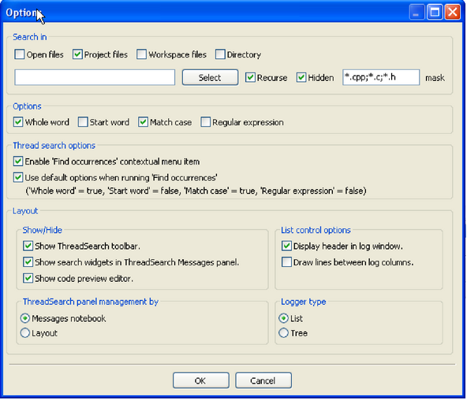
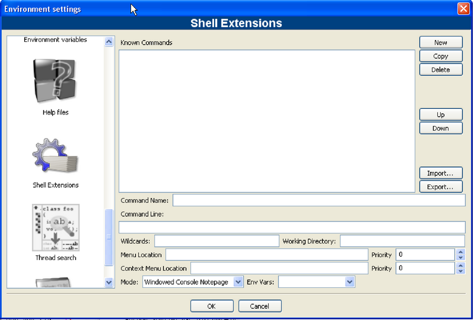
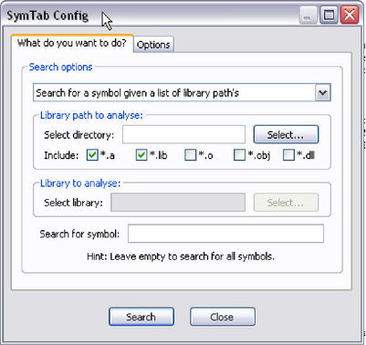

|
|
Artistic Style is a source code indenter, source code formatter, and source code beautifier for the C, C++, C# programming languages. It can be used to select different styles of coding rules within CodeBlocks.
|
|
When indenting source code, we as programmers have a tendency to use both spaces and tab characters to create the wanted indentation. Moreover, some editors by default insert spaces instead of tabs when pressing the tab key, and other editors have the ability to prettify lines by automatically setting up the white space before the code on the line, possibly inserting spaces in a code that up to now used only tabs for indentation.
Since the number of space characters shown on screen for each tab character in the source code changes between editors, one of the standard problems programmers are facing when moving from one editor to another is that code containing both spaces and tabs that was up to now perfectly indented, suddenly becomes a mess to look at when changing to another editor. Even if you as a programmer take care to ONLY use spaces or tabs, looking at other people’s source code can still be problematic.
To address this problem, Artistic Style was created - a filter written in C++ that automatically re-indents and re-formats C / C++ / C# source files.
The CodeSnippets plug-in makes it possible to structure text modules and links to files according to categories in a tree view. The modules are used for storing often used files and constructs in text modules and managing them in a central place. Imagine the following situation: A number of frequently used source files are stored in different directories of the file system. The CodeSnippets window provides the opportunity to create categories, and below the categories, links to the required files. With these features, you can control the access to the files independently from where they are stored within the file system, and you can navigate quickly between the files without the need to search the whole system.
The list of text modules and links can be stored in the CodeSnippets window by right-clicking and selecting ’Save Index’ from the context menu. The file codesnippets.xml which will be created by this procedure, can then be found in the codeblocks subdirectory of your Documents and Settings\Application data directory. Under Linux, this information is stored in the .codeblocks subdirectory of your HOME directory. The CodeBlocks configuration files will be loaded during the next start-up. If you wish to save the content of CodeSnippets at a different location, select the ’Save Index As’ entry. To load this file, select ’Load Index File’ during the next start-up of CodeBlocks or include the directory in the ’Settings’ context menu under ’Snippet Folder’. The settings are saved in the corresponding file codesnippets.ini in your application data.
For including a category, use the ’Add SubCategory’ menu. A category can contain Snippets (text modules) or File Links. A text module is created via the ’Add Snippet’ command in the context menu. The content is integrated into the text module as ’New snippet’ by selecting the text passage in the CodeBlocks editor and dragging and dropping it onto the module and the properties dialog pops up. Double-clicking the newly included entry or selecting ’Edit Text’ will open an editor for the content.
|
|
Output of a text module is handled in CodeBlocks via the context menu command ’Apply’ or by dragging and dropping into the editor. Under Windows, the contents of a Snippet can also be dragged and dropped into other applications. In the CodeSnippets Browser you can copy a selected item with drag and drop to a different category.
Beyond this, text modules can be parametrised by <name> variables which can be accessed via $(name) (see Editing a text module 2.2). The values of the variables can be retrieved in an entry field if the text module is called via the context menu command ’Apply’.
Besides the text modules, links to files can also be created. If, after having created a text module, you click the context menu command ’Properties’, then you can select the link target by clicking the ’Link target’ button. This procedure will automatically convert the text module into a link to a file. In CodeSnippets, all text modules will be marked by a T symbol, links to a file by an F symbol. If you want to open a selected file (link) in the codesnippets view just select the context menu ’Open File’ or hold the ’Alt’ key and make a double click on the file.
Example: With this setting, if open a link to a pdf file from the codesnippets view a pdf viewer will be started automatically. This method makes it possible for a user to access files which are spread over the whole network, such as wiring plans, documentations etc., with the common applications, simply via the link. The content of the codesnippets is stored in the file codesnippets.xml, the configuration is stored in the file codesnippets.ini in your application data directory. This ini file will, for example, contain the path of the file codesnippets.xml.
CodeBlocks supports the usage of different profiles. These profiles are called personalities. A profile is created by starting CodeBlocks with the command line option --personality=<profile>. Then the settings will not be stored in the file default.conf, but in <personality>.conf in your application data directory instead. The Codesnippets plugin will then store its settings in the file <personality>.codesnippets.ini. Now, if you load a new content <name.xml> in the Codesnippets settings via ’Load Index File’, this content will be stored in the corresponding ini file. The advantage of this method lies in the fact that in case of different profiles, different configurations for text modules and links can be managed.
The plug-in offers an additional search function for navigating between the categories and Snippets. The scope for searching Snippets, categories or Snippets and categories can be adjusted. By entering the required search expression, the corresponding entry is automatically selected in the view. CodeSnippets View 2.3 shows a typical display in the CodeSnippets window.
|
|
In complex software projects, where different users are involved, there is often the requirement of different tasks to be performed by different users. For this purpose, CodeBlocks offers a Todo List. This list can be opened via ’View’ /’To-Do list’ , and contains the tasks to be performed, together with their priorities, types and the responsible users. The list can be filtered for tasks, users and/or source files.
|
|
If the sources are opened in CodeBlocks, a Todo can be added to the list via the context menu command ’Add To-Do item’. A comment will be added in the selected line of the source code.
When adding a To-Do, a dialogue box will open where the following settings can be made (see Dialogue for adding a ToDo 2.5).
|
|
The necessity occurs frequently of transferring source code to other applications or to e-mails. If the text is simply copied, formatting will be lost, thus rendering the text very unclear. The CodeBlocks Export function serves as a remedy for such situations. The required format for the export file can be selected via ’File’ /’Export’ . The program will then adopt the file name and target directory from the opened source file and propose these for saving the export file. The appropriate file extension in each case will be determined by the export format. The following formats are available.
Via the ’Search’ /’Thread Search’ menu, the appropriate plug-in can be shown or hidden as a tab in the Messages Console. In CodeBlocks, a preview can be displayed for the occurrence of a character string in a file, workspace or directory. In doing so, the list of search results will be displayed on the right-hand side of the ThreadSearch Console. By clicking an entry in the list, a preview is displayed on the left-hand side. By double-clicking in the list, the selected file is opened in the CodeBlocks editor.
ThreadSearch plugin offers the following features:
|
|
Once the plugin is installed, there are 4 ways to run a search:
To access ThreadSearch plugin configuration panel click on (see Configuration of Thread Search 2.7):
|

|
Search in part defines the set of files that will be analysed.
You can choose different modes how the the ThreadSearch window is managed. With the setting ’Message Notebook’ the ThreadSearch window will be a dockable window in the message panel. If you choose the setting ’Layout’ you will be able to undock the window from the message panel and put it somewhere else.
The view of the search results can be displayed in different ways. The setting ’List’ displays all occurrences as list. The other mode ’Tree’ gathers all occurrences within a file as a node.
The File Explorer The file manager 2.8 is included in the Shell Extensions plugin, and can be found in the ’Files’ tab. The composition of the File Explorer is shown in The file manager 2.8.
On top you will find a field for entering the path. By clicking the button at the end of this field, the drop-down field will list a history of the past entries which can be navigated via a scroll bar. The up arrow key on the right-hand side of the field moves up the directory structure one directory.
In the ’Wildcard’ field you can enter a filter term for the file display. Leaving the field empty or entering * results in all files being displayed. Entering *.c;*.h, for example will result in solely C sources and header files being displayed. Opneing the pull-down field will, again, list a history of the last entries.
|
|
Pressing the Shift key and clicking selects a group of files or directories, pressing the Ctrl key and clicking selects multiple separate files or directories.
The following operations can be started via the context menu if one or multiple directories are selected in the File Explorer:
The following operations can be started via the context menu if one or multiple files or directories are selected in the File Explorer:
The following operations can be started via the context menu if one or multiple files are selected in the File Explorer:
User-defined functions can be specified via the menu command ’Settings’ /’Environment’ /’Shell Extensions’ . In the Shell Extensions mask, a new function which can be named at random, is created via the ’New’ button. In the ’ShellCommand Executable’ field, the executable program is stated, and in the field at the bottom of the window, additional parameters can be passed to the program. By clicking the function in the context menu or the Shell Extensions menu, the function is started and will then process the selected files/directories. The output is redirected to a separate shell window.
In the screenshot, a menu entry in ’Shell Extensions’ /’SVN’ and in the context menu is created for ’SVN’. $file in this context means the file selected in the File Explorer, $mpath the selected files or directories (see Variable Expansion 3.2).
This and every subsequent command will create a submenu, in this case called ’Extensions’ /’SVN’ /’Add’ . The context menu is extended accordingly. Clicking the command in the context menu will make the SVN command add process the selected files/directories.
The plugin support the use of CodeBlocks variables within the shell extension.
|

|
Example
You can use the file explorer to diff files or directories. Follow these steps:
This command will be executed using the selected files or directories as parameter. The selection is accessed via the variable $mpaths. This is an easy way to diff files or directories können.
Call this executable.
Name of the file without extension.
Extension of the selected file.
Name of the file.
Name of the file without path info.
Name of the selected directory.
Name of directory without path info.
Absolute path.
Relative path of file or directory.
List of current selected files or directories.
String that is entered in a message window.
Parent directory (../).
Alt-x und &SVN/&Add can be used with shortcuts. Support for personalities. hint: Context menu is also available in the editor!!! Bsp:
Context menu ’View’ /’ SVN Decorators’
BrowseTracker is a plugin that helps navigating between recently opened files in CodeBlocks. The list of recent files is saved in a history. The number of entries is limited to 20. With the menu ’View’ /’Browse Tracker’ /’Clear’ the history is cleared.
With the window ’Browsed Tabs’ you can navigate between the items of the recently opened files using the menu entry ’View’ /’Browse Tacker’ /’forward/backward’ or the shortcut Alt-Left/Alt-Right.
A common procedure when developing software is to struggle with a set of functions which are implemented in different files. The BrowseTracks plugin will help you solve this problem by showing you the order in which the files were selected. You can then comfortably navigate the function calls.
The configuration of the plugin is stored in your application data directory in the file default.conf. If you use the personality feature of CodeBlocks the configuration is read from the file <personality>.conf.
|
|
Based on the entries in the configuration mask, this simple plugin detects the proportions of code, commentaries and blank lines for a project. The evaluation is called via the menu command ’Plugins’ /’Code statistics’ .
This plugin makes it possible to select a term within the editor and to search for this term via the context menu ’Search at Koders’ in the [?] database. The dialogue offers the additional possibilities to of filtering for program languages and licences.
This database search will help you find source code originating from other world-wide projects of universities, consortiums and organisations such as Apache, Mozilla, Novell Forge, SourceForge and many others, which can be re-used without having to reinvent the wheel every time. Please observe the licence of the source code in each individual case.
A simple graphical interface to the GNU GProf Profiler.
This plugin makes it possible to search for symbols in objects and libraries. The options and the path for the command line program nm are defined in the Options tab.
|

|
Clicking the ’Search’ stats the search, the results of the NM program are displayed in a separate window caleld ’SymTabs Result’. The name of the objects or libraries containing the symbol are listed under the title ’NM’s Output’.